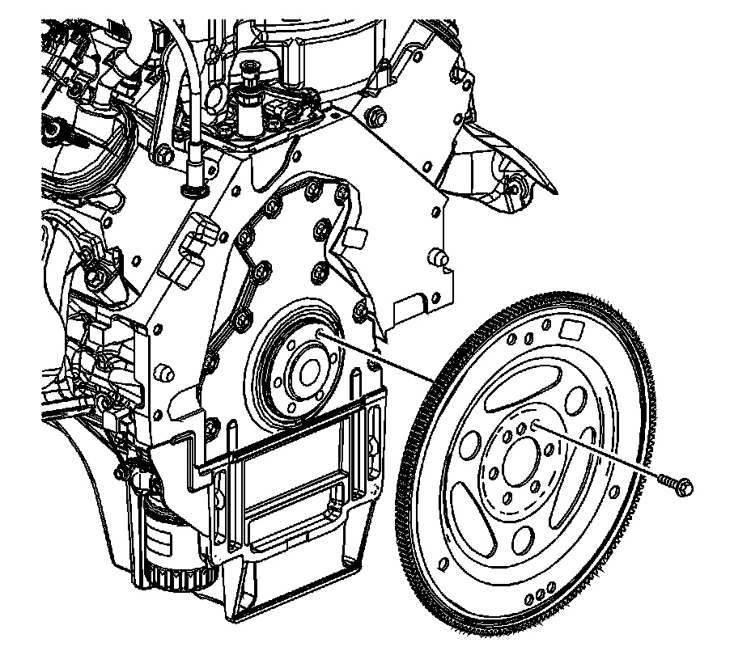

98. Automatic Transmission Flex Plate Installation
Automatic Transmission Flex Plate Installation

Important: The flex plate does not use a locating pin for alignment and will not initially seat against the crankshaft flange, but will be pulled onto the crankshaft by the engine flex plate bolts. This procedure requires a 3 stage tightening process.
1. Install the flex plate to the crankshaft.
2. Apply threadlock GM P/N 12345382 (Canadian P/N 10953489), or equivalent, to the threads of the flex plate bolts.

Notice: Refer to Fastener Notice.
3. Install the engine flex plate bolts.
1. Tighten the engine flex plate bolts (1-6) a first pass in sequence to 20 N.m (15 lb ft).
2. Tighten the engine flex plate bolts (1-6) a second pass in sequence to 50 N.m (37 lb ft).
3. Tighten the engine flex plate bolts (1-6) a final pass in sequence to 100 N.m (74 lb ft).